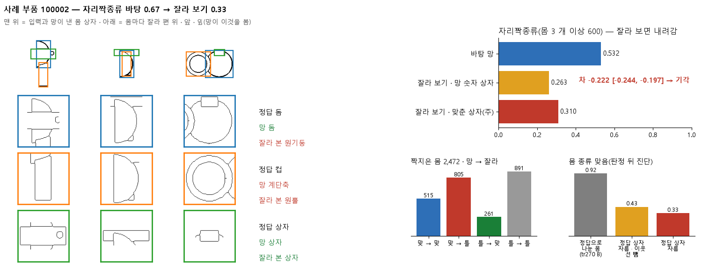

실험 m2_tr0279_h030_잘라보기
목표 G1.2 view 모음 → 파츠별 CAD code(CadQuery · 그 전 「3 면도 → 파츠별 CAD」 · 지금 M2 는 위 · 앞 · 옆 고정 세 장만 받음 → 아무 각도 N 장으로 바꿀 것 · 11-20) · G1 첫 제품 — 피규어 · 메카 사진 여러 장 + 치수 → 숨은선 3 면도 + 파츠별 CAD · G0 임의의 이미지 → CAD 코드 · 빌린 가정 3: 생성기기하 · 정답3D · 정사영 · 갚는 계획: 탐색 · 생성기 부품 · 몸 3 개 이상 600(tr277 · 278 · 280 과 같음) · 상자는 tr277 실루엣 맞춤 숫자 — 오르면 진척판 2,024(나머지 1,424 맞춤을 이 실험 폴더에 · 같은 함수) · dd 의 망 없는 상자(공유 축 구간)로 바꿔 끼움 → 흐린 view · m1 view 로 버팀(Sc) · 목표 시험지 값: 안 잼 (!)
망이 낸 몸마다 그 상자로 입력 선을 잘라 몸 틀로 펴고 같은 망에 하나씩 보여 종류를 고르면, 처음 보는 몸 3 개 이상 부품의 자리짝종류가 바탕보다 오르나?
판정 · H30 기각(-0.222 [-0.244, -0.197]) — 망이 낸 몸 상자로 입력을 잘라 같은 망에 하나씩 보이면 자리짝종류 0.53 → 0.31 · 정답 상자로 잘라도 몸 종류 0.35(정답으로 나눈 몸 tr270 B 0.92) — 학습 없이 통째 그림 망에 잘라 낸 그림을 보이는 길은 막힘 · 판정 뒤 진단: 해상도 · 이웃 선 · 읽는 칸 어느 것도 큰 몫 아님 · 짐작: tr270 천장은 정답 메시로 그린 선이라 그림에서 나눈 몸보다 깨끗함 · 다음: tr270 천장을 「그림에서 자른 선」 으로 다시 재기(Ce) — 그 뒤 잘라 낸 몸 그림으로 학습하는 몸 하나 분류기
| 가설 | 주장 | 결과 | 근거 |
|---|---|---|---|
| H30 | 망이 낸 몸 상자로 입력을 잘라 몸 틀로 펴서 같은 망에 하나씩 보이면 짝지은 몸의 종류가 바탕보다 더 맞는다 | 기각 | 바탕 0.532 → 잘라 보기(맞춘 상자) 0.310 · 같이 팔 A(망 숫자 상자) 0.263 · 짝지은 몸 2,472: 맞 → 맞 515 · 맞 → 틀 805 · 틀 → 맞 261 · 틀 → 틀 891 · 묶음겹침 0.713 → 0.435 · 몸 수 3 · 4 · 5 · 6 모두 내려감(0.649 → 0.376 · 0.574 → 0.310 · 0.468 → 0.285 · 0.389 → 0.244) · 정답 상자로 잘라도 몸 종류 0.347(몸 2,620) · 못 지은 상자 0 · 판정 뒤 진단(앞 300 · 몸 1,312 · tr270 과 같은 몸): tr270 B 0.921 · C 0.992 · 정답 상자 자름 0.334 · 그 몸 선 둘레만 남김 0.428 · 가장 큰 몸(거의 안 늘림) 자름 0.512 · 제 선만 0.634 · B 0.976 · 가운데 칸으로 읽어도 0.335 · 망이 본 몸 수 가운데 2 · 몸 1 개로 본 비율 0.054 |
분석
한 줄로
물음: 망이 낸 몸마다 그 상자로 입력을 잘라 몸 하나짜리 그림처럼 펴고 같은 망에 다시 보이면, 처음 보는 몸 3 개 이상 부품의 몸 종류가 더 맞나?
답: 아니다 — 기각. 같은 600 부품에서 자리짝종류가 0.53 → 0.31 로 떨어졌다. 정답 상자로 잘라도 몸 종류는 0.35 뿐이다. 학습 없이 통째 그림을 배운 망에 잘라 낸 그림을 보이는 길은 막혔다.
왜 이 실험을 했나
진척판이 잃은 0.47 을 가르니 몸이 모자라 짝이 없는 몫(개수 고치기로 되찾을 수 있는 최대)은 0.05 뿐이고, 0.42 는 짝지은 몸의 종류 틀림이었다. 그래서 개수 고치기 대신 종류를 겨눴다. m2-tr270 에서 정답대로 나눈 몸을 보이면 같은 망이 0.88 을 맞혔다. 그렇다면 나누기를 정답 대신 망 자신의 상자로 해도 그 천장을 어느 정도 따라갈 것이라 봤다.
바꾼 것 하나
망이 낸 몸마다 상자(tr277 이 실루엣에 맞춘 숫자로 지은 3D 상자)로 입력 선 세 장을 자르고, 몸 가운데를 가운데로 · 가장 긴 변을 몸 1 개 부품과 같은 크기로 폈다. 상자 밖은 지우고, 늘려서 굵어진 선은 1 화소로 가늘였다. 같은 망에 넣어 나온 종류로 그 몸의 종류만 바꿨다. 자리 · 개수는 그대로다. 나머지는 tr278 · tr280 과 같다. 카드는 돌리기 전에 커밋했다(e997a355).
결과

| 같은 600 부품 | 잘라 보기(맞춘 상자) | 바탕 망 | 판정선 | 넘었나 |
|---|---|---|---|---|
| 자리짝종류 | 0.31 | 0.53 | 차 ≥ +0.05 | 아니오(차 -0.22 [-0.24, -0.20] · 기각) |
자리짝종류 = 망이 낸 몸을 정답 몸과 자리로 짝지어 종류가 같은 비율(진척판 자). 망 숫자 그대로 지은 상자로 잘라도 0.26 이다. 짝지은 몸 2,472 개 중 망이 맞혔다가 틀리게 바뀐 것이 805 개, 틀렸다가 맞게 바뀐 것은 261 개다. 몸 3 · 4 · 5 · 6 개 부품 모두 내려갔다.
왜 이렇게 나왔나
확인한 것
- 상자 탓이 아니다. 정답 상자로 잘라도 몸 종류 0.35 다. 같은 몸을 tr270 처럼 정답으로 나눠 보이면 0.92 다.
- 상자 자리는 맞다. 큰 몸 넷을 겹쳐 그려 보니 잘라 낸 그림의 그 몸 선은 tr270 그림과 겹친다.
- 망은 잘라 낸 그림을 몸 둘로 본다(가운데값 2 · 몸 하나로 본 것 5 %). 그래서 가운데에 가장 가까운 칸으로 읽어 봤지만 0.34 로 같았다.
- 처음엔 이웃 몸 선과 해상도를 의심했지만 둘 다 큰 몫이 아니었다. 그 몸 선 둘레만 남기면 0.33 → 0.43 이다. 거의 안 늘린 큰 몸도 0.51(제 선만 0.63)로, 정답으로 나눈 몸 0.98 과 멀다.
짐작 (아직 확인 안 함)
- tr270 의 「정답으로 나눈 몸」 은 정답 몸 메시로 그린 선이다. 합친 그림에서 잘라 낸 선은 몸끼리 만나는 곳의 교차선 · 겹친 선 때문에 꼴이 다르다. 그래서 0.88 천장은 「그림에서 나누기」 의 실제 천장보다 높게 잡혔을 수 있다.
한계
- 600 부분집합 · 한 번만 돌림. 망은 몸 하나 그림으로 따로 배운 적 없는 통째 그림 망이다.
- 판정 뒤 진단은 판정이 아니다(앞 300 부품 · 몸 1,312 · tr270 과 같은 몸).
- 진척판 2,024 점은 나머지 1,424 부품 상자 맞춤이 끝나면 적는다.
배운 것과 다음
통째 그림 망에 잘라 낸 몸 그림을 보이면 종류를 더 못 맞힌다(0.53 → 0.31 · 정답 상자도 0.35) — 정답으로 나눈 몸 0.92 와의 차이는 상자가 아니라 그림 꼴이다.
- 천장 다시 재기(Ce): tr270 천장을 정답 메시 선 대신 「합친 그림에서 정답 몸 자리만 남긴 선」 으로 다시 잰다 — 그림에서 나누기의 진짜 천장.
- 그 천장이 높으면, 잘라 낸 몸 그림으로 몸 하나 분류기를 학습한다(학습 부품에서 정답 상자로 자름 · 시험은 망 상자).
- 개수 고치기는 상한 0.05 라 그 뒤.
실험 기록
- 카드(돌리기 전 커밋 e997a355 · H30_A_Fi · 식 · 판정식) · 잘라279.py(시험 · 흐름 · 상자 · 재기 · 진단 · 그림 · 맞추기) · 잼.json · 흐름.png · 결과.png · 원본 out/설명/캐드부품/모델279(상자_600.npy · 행_600.json · 맞춤_600_1312 · 1312_2024 진행 중)
- 자르기 시험: 점 (x .3, y .2) → 몸 틀 가운데 · 상자 밖 점 지움 · 몸 1 개 20 부품 정답 상자로 자른 그림 = 입력 F1 1.0 · 망 종류 같음 1.0.
- 몸 상자 600 부품 지음 · 못 지은 몸 0. 몸 지은 코드는 지금 생성기(필렛 먼저 고침 — 상자 크기 영향 없음).